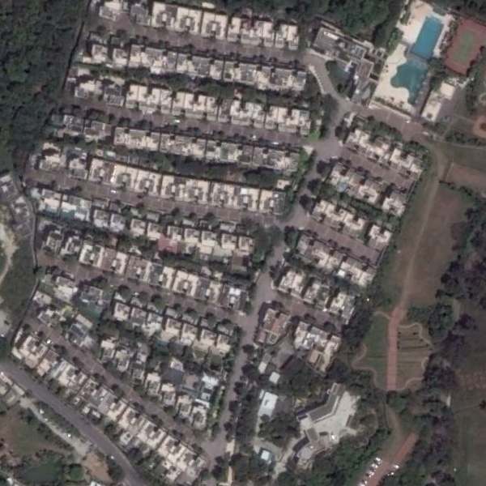
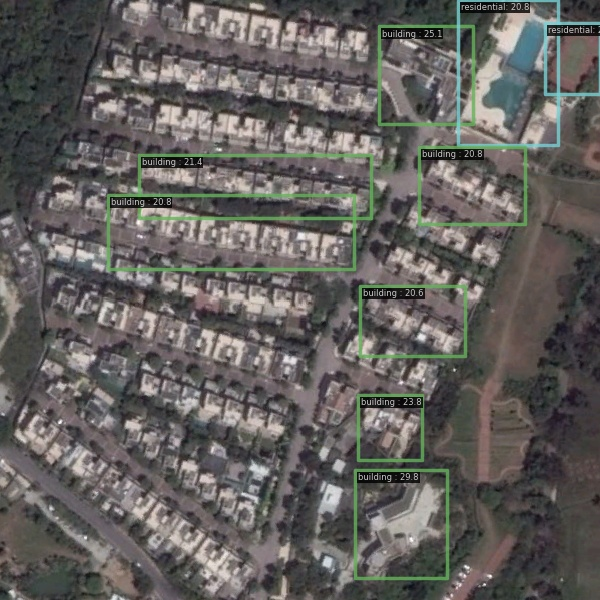
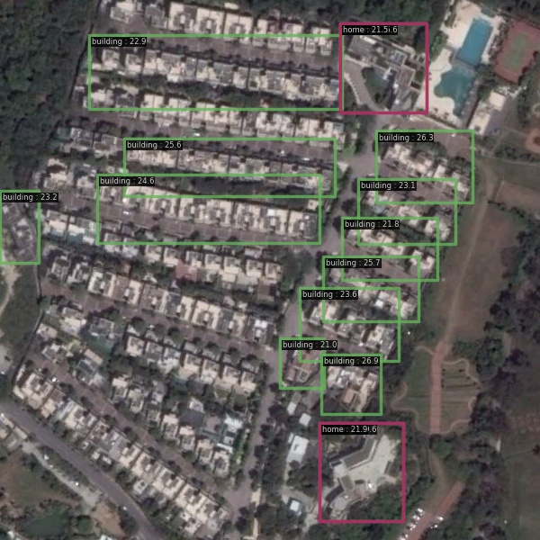
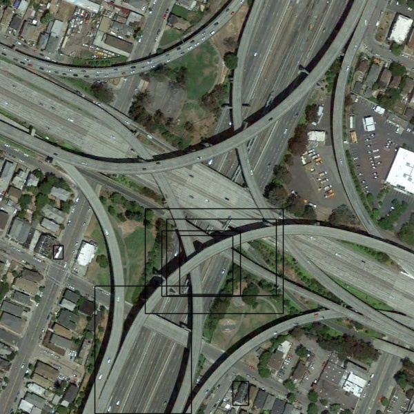
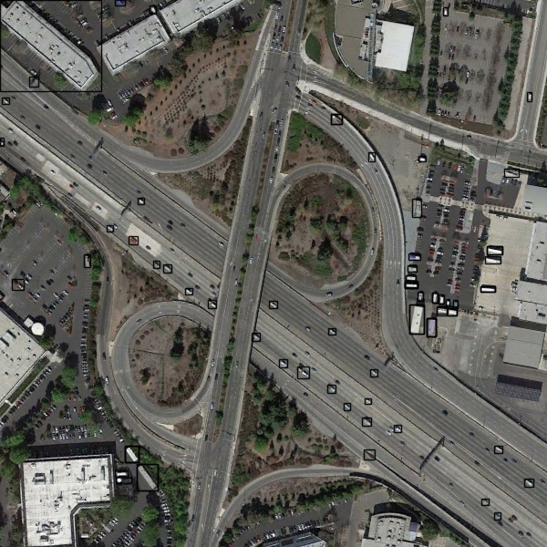
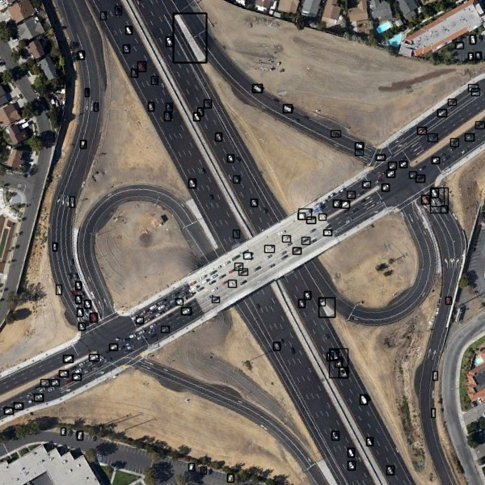
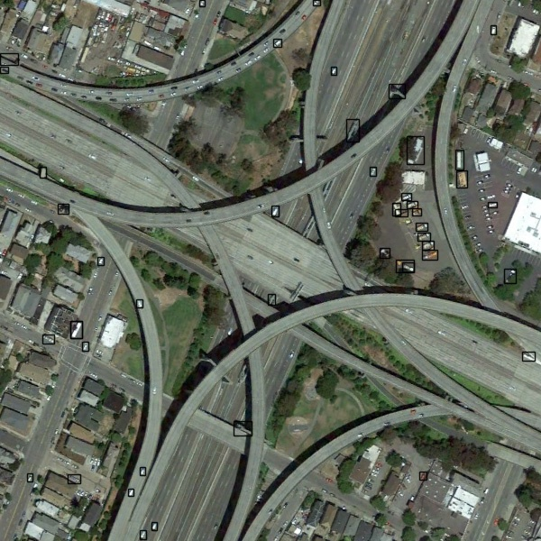

前言 #
前些日期我去参加学院组织的暑期实践, 为期一个月. 期间从零开始学习了深度学习和图像识别技术, 最后部署了一下 AAAI'25 接收的一篇论文中的模型 LAE-DINO, 并在 LAE-1M 数据集中的部分图片和实践公司提供的卫星图片上简单测试了. 应该说因为专业不相关, 所以主要时间都花在学习深度学习知识上了, 没有做出什么实质性工作. 不过在使用(准确是说「玩」)这个模型的时候, 我发现了一个奇妙的现象, 因此记录于此.
LAE-DINO #
LAE-DINO 模型能检测遥感影像(Remote Sensing)对象, 基于 DINO (或者说应该是 Grounding DINO?) 设计. 其特点是「开放集合目标识别(Open-set Object Detection)」, 即在语言的提示下, 可以识别训练集中没出现的类别. 实际使用中, 我们需要给模型提供一条「提示词」, 把所有希望查询的类别拼成一个字符串, 例如 playground . road . tank . airplane . vehicle.
模型是如何「认识」未知类别的呢? 简单来说就是通过语言. 人类可以把对象特征分解为几个「通用」特征的组合, 例如「百事 = 红 + 蓝 + 太极」, 这样即便人没见过百事, 如果以及知道后面三个特征, 依然可以从可口和百事中区分并选出百事可乐. 在模型中可能并不存在这么具体的分解过程, 但是语言模型学习到的特征确实有这种「组合」性质(可见 3b1b 的视频). 我对这类开放集合目标识别模型目前的理解就是: 通过交叉注意力机制等方式融合图像和文本特征, 让模型能认识图像更底层的「通用」特征, 这样就能靠描述来识别未知类别了.
我不是人工智能专业的, 看过的模型也很少, 不太了解一般目标识别模型能达到怎样的水平. 不过在我看来, LAE-DINO 并不是一个出色的模型. 最初我使用官方提供的测试指令
python demo/image_demo.py images/airplane.jpg \
configs/lae_dino/lae_dino_swin-t_pretrain_LAE-1M.py \
--weights /path/to/model/ \
--texts 'playground . road . tank . airplane . vehicle' -c \
--palette random \
--pred-score-thr 0.4
在测试集中的一张机场图片上推理(inference), 推理结果上居然一个框都没有! 后面才发现是 0.4 的 pred-score-thr 太高了, 下降一点就好了. 相比之下, 这篇论文更大的价值可能是给出了一个 LAE-1M 数据集. 但其实这个数据集也不是很好. 根据论文的说法, 这个数据集统合了目前的一些开源数据集, 如 DIOR, DOTA v2 等等. 对那些有精细标注的数据, 统一了数据格式; 而对没有精细标注, 只有图片-描述的数据集, 采用 Segment Anything + 语言模型的半自动标注工具, 标注图像中的部分目标. 但这个自动标注还有很大提升空间, 机场里的飞机都不能全部标出来, 质量有点低了. 后面我也看了 SAM 的数据标注过程, 可能目前这个时段, 想要获得高质量的标注, 找高质量的人是不可或缺的. 也正是如此, 感觉个人/小团体研究很难作出比大公司好的成果啊.
发现 #
虽然模型的初次使用效果很差, 但是也没有其他模型可用. 而且我手头也没有数据, 也还没有编写模型代码的经验, 不能自己设计. 所以我还是在这个模型上继续测试. 不能改架构, 那么能调整的就只有查询词和阈值了.
我的第一个想法, 也是很容易想到的想法就是: 用相关的词能否增强查询效果? 在 LAE-DINO 的论文中提到, 他们会提取「场景特征(scene feature)」, 方法是将场景中相关的对象的特征加权平均, 例如 airport <- airplane + vehicle + .... 那么反过来, 如果提供很多同一场景的物品, 是否能激发模型的理解力? 而且 LAE-DINO 提取语言特征(text backbone)用的是 BERT 模型, 其提取语言特征用了 transformer 架构, 而 transformer 中重要的注意力机制就会考虑相邻词汇之间的联系. 所以这两者都启发我们, 用相关的词是可以增强效果的. 因此我尝试用多个近义词(如 car . vehicle . bus)代替单个词(如 vehicle)去查询, 并且避免一次查询多个类别的目标(例如避免官方例子中的那种提示词). 结论是效果确实有提升, 但是提升的不多.
但随后的测试中, 由于一次拼写错误, 我发现了一个奇异的现象:
|  building |  ... residential |  ... residental |
如上图. 图片来自 LAE-1M 中 AID 数据集的 denseresidential_96.jpg, 阈值固定为 0.2, 从左到右的测试文本分别是 building, building . house . home . residential, building . house . home . residental. 可以看出添加了近义词之后, 检测效果有了明显提升; 而 residental 的效果比 residential 的效果还要好(在阈值相同的情况下, 多检测出了几个楼房). 但是 residental 实际上是错误的拼写, 这就很奇怪了, 为什么错误的拼写比正确的效果还要好呢?
需要补充的是, 这里的「效果好」是从两个方面体现, 一个是找到的对象数量(召回率), 另一个是模型对检测结果的置信度(在 MMDetection 框架中, 表现为推理后模型给出的分数, 对应准确率). 前者较低, 则对应着「模型」遗漏较多物品; 后者较低, 则说明模型更容易把正确的和错误的混淆. 在检测结果固定时, 为了得到更多正确结果, 我们不得不降低置信度筛选阈值(score_threshold). 而降低阈值, 则找到的对象会变多, 但是代价是更多识别错误也会被保留, 准确度降低; 反过来, 为了提高准确度, 则必须提高阈值. 因此在模型并非完美时, 二者会相互削弱. 而从上三图片可见, residental 实际上是「增大了楼房被检测的分数」, 在这张图上大致增强了 0.05 左右, 而非楼房物品的变化则不明显(至少没有出现新的错误检验). 因此在阈值不变的情况下, 检测到了更多楼房, 这就是同时提高了召回率和准确率.
随后我又联系 transformer 模型的结构, 想到 transformer 需要先分割语句, 提取分割后单词的特征. 而这些单词并不是按空格分开, 实际上还可能会按词根分开. 所以 residental 里面的 tal 可能是重点. 将提示词中的 residental 替换为 tal 之后, 效果居然一致地好.
Word Root is all you need!(开个玩笑)
因此我推测词根可能是这里起作用的关键, 随后我开始测试各种词根的检测效果.
进一步实验 #
接下来的测试十分暴力. 我让 DeepSeek 生成了一些英文的前后缀, 随后随机取其中的 6 个, 并与固定的实词结合, 检查推理效果. 随后我发现, 这些词根确实能提高检测效果, 而且不同词根检测物品有不同的倾向. 例如 ment, ness, tion 比较适合检测如楼房般方正的对象, a, ance, let 比较适合检测微小的对象. 最后我简单地通过
- 重复上述的随机检测足够多次, 统计检测到的目标数量
- 取目标数量较多的那些词根组合, 统计词根出现频率
- 用最高的 6 个词根作为目前的「最优提示词」
三步找到了一个(在单张图片上)效果不错的提示词. 以汽车为例, 实践公司提供的卫星影像里, 汽车基本只有几个像素大小, 因此我也从 LAE-1M 里选择了几个看起来差不多大的图片来演示
| viaduct_48 | viaduct_54 |  viaduct_64 |
|  viaduct_48 + |  viaduct_54 + |  viaduct_64 + |
第一行的提示词均为 car . vehicle . bus, 第二行的均为 car . vehicle . bus . a . al . ance . ish . ward, 阈值均为 0.05. 由于使用 MMDetection 自带的绘制 BBox 工具, 汽车会被标签遮挡, 导致完全看不到检测到了什么(, 而且我也不知道怎么修改), 所以我自己绘制了 BBox.
可以明显看到, 使用了莫名其妙的词根之后, 检测到的车辆大幅增加, 特别在 viaduct_54.jpg 上, 几乎把所有汽车都检测出来了. 我觉得这是很惊人的, 因为实际去看卫星影像里的汽车, 有些人眼都分辨不出来是不是车, 所以在这个问题下模型能保证召回率就很不容易了. 但是在 viaduct_64.jpg 上效果明显不如前一个, 左上的很多汽车都没有被检测到. 在实践期间我测试了整个城区里上述提示词的检测效果, 结果也是如此: 在有些图片上效果极佳, 但是在有些图片上效果极差. 而两个极端的图片又其实没有太大的区别. 因为实践时间较短, 我暂时没有给出更好的方案.
从结果来看, 我认为用词根增强搜索结果是可行的. 但是要想达到更好的效果, 肯定还需要进一步的研究.
结论 #
首先, 关于如何进一步找到更好的检测提示词, 我有一个设想: 由于遥感影像中事物类别较为有限, 所以可以为一些常用类别提前设计好专用的辅助词根. 而对某个特定目标, 可以通过上文中的方法先生成一些「词语-识别准确率+召回率」的关系, 并用这些关系作为数据训练一个(前馈)神经网络, 用模型估计每个词对结果的贡献. 毕竟我使用的数据都是没有标注的, 实际上并不知道检测到的是正确还是错误, 只看检测数量其实就是有缺陷的.
其次, 这一过程说明了开放集合图像识别在识别任务中的优势. 在模型不变的情况下, 调整输入的自然语言可以显著提高识别效果, 说明开放集合目标识别不仅有机会识别训练集以外的目标, 即使在固定种类的目标识别问题上也能通过语言的微调来增强结果.
最后, 我认为这种手段未必在所有的 grounding 类开放集目标识别模型上都适用. 首先我只测试了 LAE-DINO 模型, 其次很显然提示词被处理后得到的向量与语言模型和输入方式(这里是用.连接)有关, 同时语言向量和图特征向量的联系也和训练过程有关. 所以更换模型或者更换训练数据, 很可能会导致词根的效果变化. 还有, 英语的词根的地位实际上和汉语的字等同, 从这个角度来看, 如果使用汉语来识别, 可能天然地会比英文有更好的效果. 由于时间有限, 我无法对这个问题给出更多回答了.
测试代码 #
如果你对这个事情感兴趣, 我可以提供我用来测试的代码. 模型直接用的是 LAE-DINO Github 中提供的 checkpoint. 测试的代码需要放在 LAE-DINO\mmdetection_lae 下, 并且同目录下需要一个 config.txt 文件, 提供阈值、是否要用 MMDetection 绘制 BBox、检测图片的目录、提示词等.
inference.py
from PIL import Image
import re
import os
import json
import cv2
import copy
import random
import seaborn as sns
def plot_one_box(x, img, color=None, linewidth=1):
# Plots one bounding box on image img
tl = linewidth
color = color or [random.randint(0, 255) for _ in range(3)]
c1, c2 = (int(x[0]), int(x[1])), (int(x[2]), int(x[3]))
cv2.rectangle(img, c1, c2, color, thickness=tl, lineType=cv2.LINE_AA)
def get_seaborn_colors(n, palette='husl'):
# 可选调色板: 'husl', 'Set2', 'dark', 'bright'等
return sns.color_palette(palette, n_colors=n)
def inference(input: str, queries: list, thr: float, withlabel=True):
from mmdet.apis import DetInferencer
init_args = {
"model": "configs/lae_dino/lae_dino_swin-t_pretrain_LAE-1M.py",
"weights": "checkpoint/lae_dino_swint_lae1m-28ca3a15.pth",
"device": "cuda:0",
"palette": "random",
}
inferencer = DetInferencer(**init_args)
flag_folder = os.path.isdir(input)
if flag_folder:
output_name = os.path.basename(os.path.normpath(input))
else:
filename = os.path.basename(input)
output_name, ext = os.path.splitext(filename)
print(output_name, ext)
inference_args = {
"inputs": input,
"texts": "",
"custom_entities": True,
"pred_score_thr": thr,
"out_dir": "outputs/" + output_name,
"no_save_pred" : False,
"no_save_vis" : True,
}
if withlabel:
# use inferencer
inference_args["no_save_vis"] = False
else:
inference_args["no_save_vis"] = True
texts = [re.sub('\n', '', line) for line in queries]
if flag_folder:
raise NotImplementedError # 暂时没写, MMDetection 可以直接推理整个文件夹, 不过似乎不能推理多提示词. 如果只有一个提示词, 那可以直接调用 inferencer
else:
origin_image = cv2.imread(inference_args["inputs"])
inference_args["no_save_vis"] = not withlabel
for text in texts:
append_name = re.sub(r' \. ', '+', text)
inference_args["texts"] = text
inferencer(**inference_args)
oldname = inference_args["out_dir"] + "/vis/" + output_name + ext
newname = inference_args["out_dir"] + "/vis/" + output_name + append_name + ext
oldnamep = inference_args["out_dir"] + "/preds/" + output_name + ".json"
newnamep = inference_args["out_dir"] + "/preds/" + output_name + append_name + ".json"
if withlabel:
if (os.path.exists(newname)):
os.remove(newname)
if (os.path.exists(newnamep)):
os.remove(newnamep)
newname = inference_args["out_dir"] + "/vis/" + output_name + "_label_" + append_name + ext
newnamep = inference_args["out_dir"] + "/preds/" + output_name + "_label_" + append_name + ".json"
os.rename(oldname, newname)
os.rename(oldnamep, newnamep)
else:
if (os.path.exists(newname)):
os.remove(newname)
if (os.path.exists(newnamep)):
os.remove(newnamep)
colors = get_seaborn_colors(len(text.split('.')))
os.makedirs(inference_args["out_dir"] + "/vis", exist_ok=True)
os.rename(oldnamep, newnamep)
new_img = copy.copy(origin_image)
with open(newnamep, 'r') as jsonfile:
args = json.load(jsonfile)
labels, scores, bboxes = args.values()
for iter in range(0, len(labels)):
if (scores[iter] >= thr):
bbox = bboxes[iter]
color = colors[labels[iter]]
plot_one_box(bbox, new_img, color, 1)
cv2.imwrite(newname, new_img)
del new_img
del origin_image
def main():
config_name = "./config.txt"
# line 1: picture x, y numbers, score_thr
# line n: promptss
with open(config_name, "r") as file:
commands = file.readlines()
_thr, yesno = commands[0].split(' ')
thr = float(_thr)
if yesno[0] == 'T':
withlabel = True
else:
withlabel = False
filename = re.sub('\n', '', commands[1])
inference(filename, commands[2:], thr, withlabel)
if __name__ == "__main__":
main()
config.txt example:
0.05 True
<path to img>
car
car . vehicle . bus . a . al . ance . ish . ward